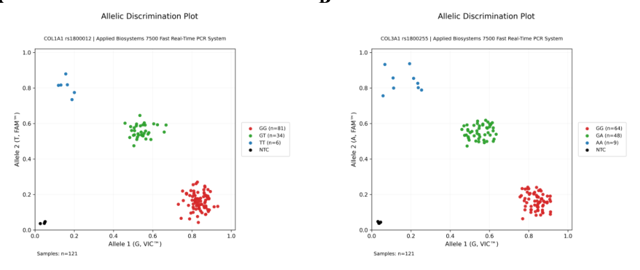
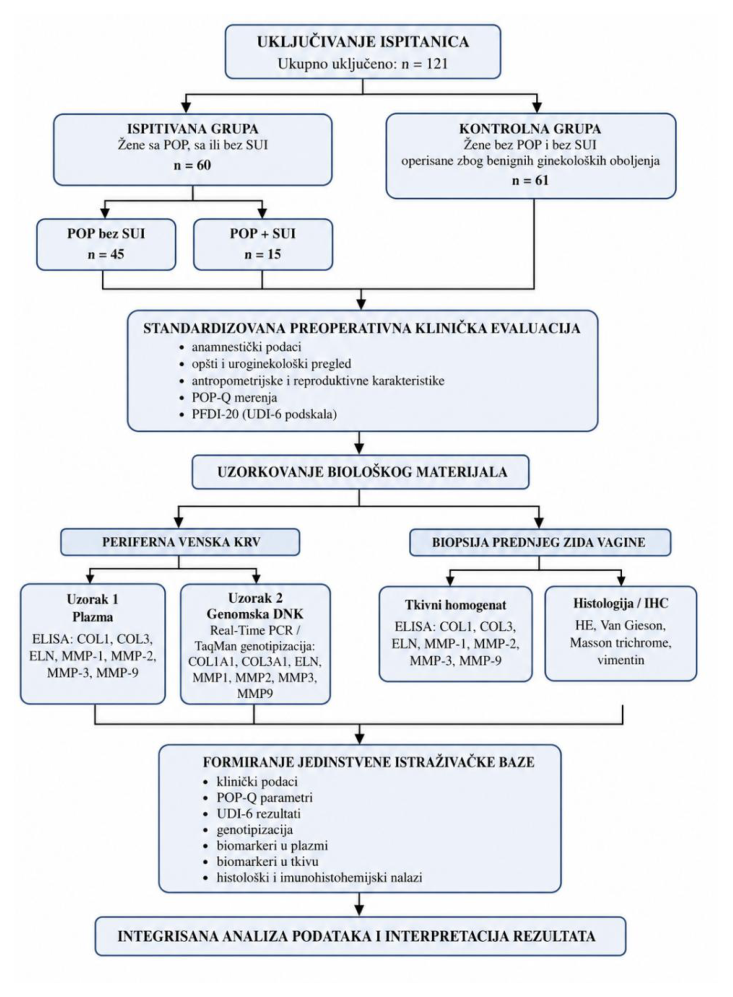

03 - Materijali i metode
Od kliničke evaluacije do integrisane analize
Metodologija objedinjuje standardizovanu kliničku procenu, genotipizaciju TaqMan Real-Time PCR metodom, ELISA kvantifikaciju biomarkera u dva kompartmenta, histologiju, imunohistohemiju i višeslojnu statističku obradu.
1 - Klinička evaluacijaAnamneza, antropometrija, reproduktivni faktori, POP-Q, PFDI-20 okvir i UDI-6.
2 - KrvEDTA uzorci za plazmu i izolaciju genomske DNK.
3 - TkivoStandardizovana biopsija prednjeg zida vagine.
4 - LaboratorijaTaqMan genotipizacija, ELISA, histologija i vimentin IHC.
5 - StatistikaANCOVA, logistička regresija, korelacije, FDR i ROC analiza.
GenotipizacijaTaqMan Real-Time PCR
BiomarkeriELISA - plazma i tkivo
MorfologijaHistologija + vimentin IHC
Laboratorija
Metode po nivoima
Metodološki tok povezuje kliničku karakterizaciju, uzorkovanje, laboratorijsku obradu i statističku interpretaciju u jedinstvenom analitičkom okviru.
| Nivo | Materijal | Metoda | Ishod |
|---|---|---|---|
| Genetika | Periferna krv | TaqMan alelna diskriminacija, Applied Biosystems 7500 Fast | 7 polimorfizama |
| Plazma | EDTA plazma | ELISA | COL1, COL3, ELN, MMP-1, -2, -3, -9 |
| Tkivo | Prednji zid vagine | Homogenizacija + ELISA | isti panel biomarkera, ng/mg tkiva |
| Histologija | Prednji zid vagine | H&E, Van Gieson, Masson trihrom | morfologija i kolagen |
| IHC | Prednji zid vagine | Vimentin | mezenhimske ćelije / stromalni kontekst |
| Klinički fenotip | Pregled | POP-Q i upitnici | anatomija i simptomi |
Vizuelna metodologija
Dve ključne metodološke ilustracije
Dijagram toka prikazuje strukturu kohorte i analitičke korake, dok histološka ilustracija dokumentuje lokalni tkivni fenotip.

